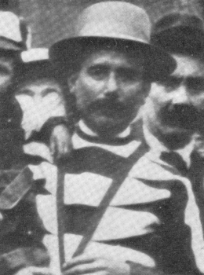
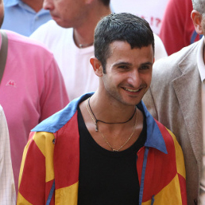
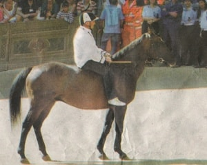

|
 alla Torre il premio speciale per il miglior tamburino del Palio del 2 luglio
La contrada sovrana dell’Istrice conquista il Masgalano 2011, scrivendo il proprio nome tra le contrade vittoriose di questa stagione paliesca appena conclusa.
La commissione, presieduta da Francesco Boschi, ha conferito l'ambito riconoscimento dopo le due Carriere che l'hanno vista primeggiare sul tufo per abilità e capacità tecniche. La preziosa opera, realizzata dal M° Pier Luigi Olla e offerta dall'Associazione La Diana, era stata presentata lo scorso 25 giugno dallo storico dell’arte Marco Ciampolini. Questi i nomi dei rappresentanti delle Contrade che hanno composto la commissione del Masgalano: Filippo Frignani (Aquila), Massimo Petreni (Bruco), Paolo Petreni (Chiocciola), Andrea Bonacci (Civetta), Federico Melai (Drago), Federico Neri (Giraffa), Emiliano Muzzi (Istrice), Marco Ventani (Leocorno), Carlo Piperno (Lupa), Massimo Marzocchi (Nicchio), Alessandro Bianciardi (Oca), Tommaso Dironato (Onda), Paolo Loria (Pantera), Luca Zanelli (Selva), Alessandro Passaponti (Tartuca), Marco Capannoli (Torre), Aldo Giannetti (Valdimontone). Scelti a misurare le bandiere per il Palio di luglio Massimo Sambucci (Nicchio) e Alessandro Malatesta (Istrice); mentre, per la Carriera di agosto, Antonio Dami (Civetta) e Paolo Belardi (Valdimontone). Il Premio speciale per il Miglior Tamburino del Corteo Storico del Palio del 2 luglio scorso, offerto e promosso dal Comitato Amici del Palio, in ricordo del giovane e coraggioso tamburino senese, Giovacchino Mencarini, volontario tredicenne nel 1848 nella prima guerra d’indipendenza nazionale, è stato assegnato alla contrada della Torre. La pregevole realizzazione artistica di Antonio Benocci, presentata dal presidente stesso della Commissione Masgalano, Francesco Boschi, nella serata del 25 giugno scorso, è stata assegnata dopo la valutazione di un’apposita commissione formata da Stefano Pastorelli (Aquila), Luca Pizzatti (Lupa) e Antonio Dami (Civetta). Contrada punteggio luglio punteggio agosto totale classifica
 LINK ALLA NOSTRA PLAYLIST CON TUTTI I VIDEO DEI CAVALLI DEL PALIO DI SIENA 
Nella foto di classe, relativa alla I Elementare Giovanni Pascoli anno 1961/62, Fortezza Medicea, sono presenti alcuni bambini, che da adulti saranno direttamente interessati alla vicende paliesche. Partendo dalla fila in alto si riconoscono: Mario Corbelli capitano del Nicchio (5° a partire da sx, escludendo il maestro De Ricco,), Paolo Pierini, già consultore del Priore dell'Istrice (7° da sx). Prima fila: Giuseppe Bonetto, già barbaresco dell'Oca (1° da sx), Maurizio Vanni capitano vittorioso della Giraffa (5° da sx), Marco Mancianti già Vicario del Drago (6° da sx), Orlando Papei ideatore di questo sito, (7° da sx). 
I dati auditel rilevano che rispetto al 2010, si è assistito ad un nuovo calo degli ascolti con una perdita di ben oltre i due punti e mezzo in percentuale.
Il Palio ha totalizzato 1.057.000 telespettatori, con uno share di solo 11.65%.
Buone le condizioni dei cavalli Marrocula e Guess, toccati in sorte rispettivamente alla Contrada Sovrana dell’Istrice e alla Contrada della Torre. Lo hanno accertato i veterinari comunali, con adeguati e scrupolosi esami diagnostici, subito dopo la Carriera.

Ha vinto la Giraffa! E’ il suo 34° drappellone. Un Palio rocambolesco con il Leocorno che ha dominato la parte iniziale della corsa, in testa fino al primo Casato. Da qui la volata di Fedora Saura e Brio fino alla vittoria. Questo l’ordine d'ingresso al canape: Aquila, Lupa, Pantera, Bruco, Leocorno, Giraffa, Istrice, Torre, Chiocciola e di rincorsa il Nicchio. Trascorsi una ventina di minuti, dopo che il mossiere ha dovuto far uscire dai canapi per quattro volte tutte le contrade, soprattutto per l'irrequietezza della Pantera, sempre alla ricerca del'Aquila, finalmente la mossa. Parte forte il Leocorno seguito dalla Torre e dalla Giraffa. Al primo San Martino è il Leocorno in testa seguito dalla Giraffa, dalla Torre, dal Bruco, dalla Chiocciola e dal Nicchio. Al primo Casato è sempre Scompiglio a girare primo, seguito dalla Giraffa, dalla Torre e dal Nicchio che supera dall’interno la Chiocciola che era quarta. All’altezza del bandierino la svolta del Palio, con la Giraffa che prende la testa e la mantiene fino alla vittoria. Al secondo giro, davanti al Bar Fonte Gaia si ferma il cavallo della Torre, con problemi di deambulazione. Si giunge così al terzo S.Martino che vede le cadute di Aquila, Lupa e Istrice, innescate da Trecciolino, fantino del Bruco. La corsa finisce con sole tre contrade (considerato che anche la Pantera si ferma poco dopo S.Martino), con la Giraffa seguita dal Leocorno e dal Nicchio. È dunque un trionfo bianco-rosso con l’accoppiata Brio e Fedora Saura entrambi al loro terzo successo in Piazza. Brio ha vinto il suo 3° palio sui 17 disputati; nella graduatoria generale dei fantini vincenti ha superato Ferrino (3/18), Pilesse e Dè (3/20), Il Bufera (3/25), Mascherino 1° (3/26), Groppasecca e Mezz'etto (3/28), Testina (3/29), Canapetta (3/32), Massimino 2° (3/33), Rondone (3/38), Bonino (3/41), Canapino II (3/46), Brandino (3/48) e avvicinato Spagnoletto (3/12) e Sagrino (3/7). Anche Fedora Saura ha vinto il suo 3° palio sugli 8 disputati; nella graduatoria generale dei cavalli vincenti ha raggiunto Mirabella, superato Piero (3/9), Tanaquilla (3/10), Quebel e Rimini (3/11), Lina (3/13), Archetta (3/15) e avvicinato Pitheos 3/7 e Niduzza (3/6).  I campioni Federica Pellegrini e Filippo Magnini, da alcuni giorni in vacanza in Toscana, sono stati visti insieme a passeggio per le strade di Siena, in attesa di assistere allo carriera dell'Assunta.  Durante l'aperitivo di benvenuto offerto agli operatori dei media, il sindaco Franco Ceccuzzi ha donato all'Ing. Marco Massimo Pignata una litografia quale ringraziamento per i 20 anni di servizio svolti presso il Comune in qualità di direttore dei lavori pubblici e in particolare per la cura che ha dimostrato nel seguire l'aspetto della pista di Piazza del Campo per ben 41 carriere.
La contrada di Salicotto, uscita facilmente prima dai canapi, si è aggiudicata la provaccia. L'unica nota interessante è stata rappresentata da Scompiglio, il fantino del Leocorno caduto durante la mossa della Prova Generale, che ha dimostrato
di non aver subìto traumi.
Così capitan Zalaffi ha comunicato ai suoi contradaioli al termine della cena della Prova Generale.
Andrea Chessa, che ricordiamo è nato a Orosei il 23 novembre 1983, sarà il 15° fantino debuttante degli anni Duemila.
Per gli amanti delle statistiche si ricorda che nelle 24 carriere fino ad oggi disputate abbiamo avuto che per 4 Palii
vi sono stati 2 esordienti; per 11 Palii un esordiente e per 9 Palii non abbiamo avuto nessun esordiente.
Il Chessa riprende il soprannome di un celebre fantino: Alfonso Menichetti, che partecipò a 30 carriere vincendone 6, di cui una, nel luglio 1911 proprio nella Chiocciola.   I due "Nappa" a confronto
La contrada che non vince da un maggior numero di anni il Palio dell'Assunta è la Lupa che arrivò prima al bandierino il con Ranco e Noce, nel lontano 1948.
Delle altre 9 che corrono ad agosto, seguono: Istrice (1958); Aquila (1988); Pantera (1991); Giraffa (1997); Nicchio (1998); Chiocciola (1999); Torre (2005); Leocorno (2007); Bruco (2008).
 Una Piazza del Campo gremita, ha fatto da cornice alla tradizionale "carica" del drappello dei Carabinieri, che a questo Palio si sono presentati con tutti bellissimi cavalli grigi. Successivamente hanno fatto ingresso le 10 contrade, ancora con gli stessi fantini, che molto probabilmente saranno quelli che correranno il Palio. Cavalli e fantini abbastanza nervosi, tanto che il mossiere è stato costretto a far uscire tutti dai canapi. Al secondo allineamento, nonostante i problemi di adattamento del Nicchio e dalla Pantera, la mossa valida. Cade il Leocorno con il cavallo che inciampa nel canape, rimasto alto. Prende quindi la testa la Pantera, per essere superata dalla Lupa, che con un buon galoppo, ma senza forzare troppo l'andatura, va a vincere la prova.
15 agosto 2011

  E' stato tenuto un tavolo tecnico, presieduto dal Questore di Siena Benedetti, per fare il punto sulla pianificazione dei servizi di ordine e sicurezza pubblica in vista del Palio del 16 agosto. In vista della “carriera” di martedì sono state programmate ed incrementate tutte le attività preventive, a carattere generale e di controllo del territorio, con l’ impiego di personale degli uffici info – investigativi in abiti civili e di operatori in uniforme, compresi quelli normalmente destinati a funzioni di supporto. In particolare, fin dal mese di giugno scorso, è stata pianificata, ad integrazione del dispositivo di controllo ordinario, un’attenta attività di verifica presso le armerie, effettuata dalla Polizia Amministrativa, con l’invito ai titolari di segnalare eventuali acquisti da parte di persone sospette; gli agenti dell’ Ufficio Prevenzione Generale e Soccorso pubblico, oltre ad incrementare il servizio di vigilanza alle Contrade interessate al Palio del 16 agosto, con particolare riguardo ai limiti di confine tra quelle rivali, Pantera/Aquila e Lupa/Istrice, hanno potenziato le attività della Sala Operativa mediante il monitoraggio delle persone in transito a Siena e nella Provincia, verificando i dati riportati nelle schedine degli alloggiati presso le strutture ricettive locali, che non hanno ancora aderito al programma di trasmissione telematica. Durante l’incontro di stamani sono state illustrate, in particolare, le misure organizzative pianificate e i servizi, disposti con ordinanza del Questore, finalizzati a garantire il regolare svolgimento della manifestazione e a prevenire e reprimere la commissione di reati, specie contro il patrimonio, come scippi, borseggi e furti negli appartamenti lasciati incustoditi per assistere al Palio e, allo stesso tempo, volti ad esercitare un attento monitoraggio della rivalità tra le contrade che saranno “in Piazza”, per evitare ogni forma di degenerazione con conseguenti turbative dell’ordine pubblico. I servizi sono stati programmati in modo da effettuare un attenta vigilanza, sia dinamica che fissa, in tutto il centro cittadino, con particolare attenzione alle ore serali e notturne, specie al termine della carriera, con la previsione di apposite aliquote posizionate all’esterno della Piazza. Anche quest’anno è stato previsto l’impiego delle unità cinofile e degli artificieri che, coordinati da un Funzionario di Polizia, si occuperanno delle attività di bonifica preventiva delle aree interessate dalle acque piovane e dai bottini sottostanti la Piazza del Campo. Tutti i varchi di ingresso della Piazza e della Conchiglia, saranno accuratamente presidiati da personale della Polizia di Stato, dell’Arma dei Carabinieri e della Guardia di Finanza, unitamente a quello della Polizia Municipale e del Corpo Forestale dello Stato, al fine di controllare visivamente le persone che vi accedano, anche mediante l’uso di metal detector. Per le specifiche attività di competenza, gli operatori delle varie Forze di Polizia verranno affiancati anche da un congruo numero di agenti della Polizia Scientifica. Nel corso della riunione si è parlato anche del Piano di Gestione dell’Emergenza. In particolare, con il piano è stata effettuata una valutazione dei rischi, con pianificazione delle misure preventive e delle procedure di intervento, in relazione alle diverse emergenze che si potrebbero verificare, tenendo presente la peculiarità del luogo in cui si svolge la corsa, con la caratteristica forma a “conchiglia” della Piazza, delle vie di afflusso e deflusso, degli allestimenti che vengono appositamente installati (palchi, materassi protettivi, parapetti ecc.)degli “spazi” riservati alle comparse, agli operatori, ai contradaioli, ai turisti e a tutti coloro che prendono parte alle varie fasi della manifestazione, fin dal giorno delle prove notturne. Martedì 16 agosto sarà, inoltre, costituito un centro unificato di coordinamento per la gestione di tutte le informazioni ed i profili inerenti la sicurezza, presso la Biglietteria della Torre del Mangia all’interno del Palazzo Pubblico, composto da rappresentanti, radiocollegati, di ciascuna Forza di Polizia e di Pubblico Soccorso che faranno capo al Dirigente del Servizio. Nel corso della riunione è stato ribadito il divieto, disposto per il giorno della carriera con apposita ordinanza, sanzionabile anche penalmente qualora non rispettato, di entrare nella pista, lanciare oggetti o, comunque, ostacolare il libero svolgimento della corsa; è vietato introdurre all’interno della Piazza del Campo, seggiole e sgabelli, tavolini, panche e cassette. Non sarà consentito infine di portare al seguito bevande in bottiglie di vetro o in contenitori metallici, in quanto è autorizzata soltanto la vendita di bibite contenute in involucri di plastica e cartone.
Trecciolino torna nel Bruco dal luglio 2007 con Choci; Tremendo torna nella Torre dal suo debutto dell'agosto 2009 con Guschione; Salasso torna nella Lupa dal luglio 2005 su Zodiach; Bighino torna nella Pantera dall'agosto 2008 su Istriceddu; Scompiglio torna nel Leocorno dal luglio 2008 su Iada.
Monte ancora invariate. Non è stata una prova rapida quella di stamani, la quarta delle sei previste prima del Palio di Ferragosto. Tra i canapi si è assistito inzialmente ad una certa difficoltà di allineamento, che ha costretto il mossiere Bartolomeo Ambrosione a fare uscire tutti fuori. Dopo un paio di mosse non valide a seguito di forzatura dei canapi, la terza ha visto partire bene Chiocciola, Aquila, Leocorno e Torre, che al secondo giro, ha preso la testa, andando a vincere con Guess montato da Francesco Caria, detto Tremendo. Questo l'ordine di ingresso ai canapi: Aquila, Torre, Chiocciola, Istrice, Lupa, Bruco, Leocorno, Pantera, Nicchio e Giraffa. Nella Prova Generale, preceduta come di consueto dalla "galoppata" dei Carabinieri a cavallo, l'ordine di ingresso ai canapi rispetterà quello del numero di orecchio, e cioè: Pantera, Aquila, Leocorno, Giraffa, Chiocciola, Torre, Nicchio, Bruco, Lupa e Istrice di rincorsa.  Tantissimo pubblico ha seguito l'evolversi della terza prova. L'ordine di ingresso tra i canapi è stato quello dell'assegnazione dei cavalli, quindi con l'Aquila di rincorsa. Ancora nessuna novità nelle monte, che probabilmente, a meno di clamorosi ripensamenti, saranno quelle definive. Ottimo spunto dell'Aquila che pur se di rincorsa riesce subito a prendere la testa. Rimasto al canape il cavallo del Nicchio che continua a dare segni di irrequietezza. Prova comunque interessante con buoni spunti di interesse, che è stata vinta dalla Chiocciola.  Si è svolta al Duomo l'offerta dei Ceri alla Vergine Maria, protettrice di Siena, da parte del Comune, delle Contrade e delle Parrocchie della città. Benedetto dall'Arcivescovo, il Cero offerto dal Comune è stato acceso dal Sindaco e posto davanti alla Cappella della Madonna del Voto. Durante la cerimonia è stato benedetto il drappellone per il Palio del 16 agosto, in onore della Madonna Assunta.
Dopo che il mossiere Bartolo Ambrosione aveva fatto uscire per una volta i cavalli dai canapi ed una prima partenza annullata per la forzatura al canape del cavallo del Nicchio, buono lo spunto al via di Nicchio, Aquila e Lupa e vittoria della Giraffa con Andrea Mari detto Brio su Fedora. Monte invariate rispetto alla prima prova. NICCHIO - Fantastic Light - Alessio Migheli detto Girolamo BRUCO - Lo Specialista - Luigi Bruschelli detto Trecciolino GIRAFFA - Fedora Saura - Andrea Mari detto Brio LEOCORNO - Ivanov - Jonatan Bartoletti detto Scompiglio AQUILA - Indianos - Giovanni Atzeni detto Tittia LUPA - Moedi - Alberto Ricceri detto Salasso ISTRICE - Marrocula - Silvano Mulas detto Voglia CHIOCCIOLA - Meremanna - Andrea Chessa PANTERA - Gammede - Valter Pusceddu detto Bighino di rincorsa TORRE - Guess - Francesco Caria detto Tremendo 
La prova è stata seguita da una esibizione del 4° Reggimento Carabinieri a Cavallo dedicata ai bambini delle contrade

Se Tittia vincesse nell'Aquila il Palio dell'Assunta, realizzerebbe il suo 1° cappotto. Si ricorda che l'ultimo fantino che riuscì
nell'impresa, fu Trecciolino nel 2005, che vinse a luglio nel Bruco e ad agosto nella Torre, montando entrambe le volte il cavallo Berio.
Buona partenza di Torre ed Aquila e vittoria della Lupa con Alberto Ricceri detto Salasso su Moedi. Prova piuttosto incolore, che ha offerto pochi spunti.
L'ordine di ingresso tra i canapi ha seguito l'ordine di trifora: Torre, Pantera, Chiocciola, Istrice, Lupa, Aquila, Leocorno, Giraffa, Bruco e Nicchio di rincorsa. Gli accoppiamenti nell'ordine di ingresso ai canapi della prima prova: TORRE - Guess (grigio 9 anni) - Francesco Caria detto Tremendo PANTERA - Gammede (sauro 9 anni) - Valter Pusceddu detto Bighino CHIOCCIOLA - Meremanna (baio 6 anni) - Andrea Chessa ISTRICE - Marrocula (10-24) (baio 6 anni) - Silvano Mulas detto Voglia LUPA - Moedi (baio 6 anni) - Alberto Ricceri detto Salasso AQUILA - Indianos (grigio 8 anni) - Giovanni Atzeni detto Tittia LEOCORNO - Ivanov (baio 8 anni) - Jonatan Bartoletti detto Scompiglio GIRAFFA - Fedora Saura (grigio 10 anni) - Andrea Mari detto Brio BRUCO - Lo Specialista (baio 7 anni) - Luigi Bruschelli detto Trecciolino rincorsa NICCHIO - Fantastic Light (baio 10 anni) - Alessio Migheli detto Girolamo
Con l'occasione della prima prova, vi sarà l'esordio del cap, ossia del nuovo zucchino protettivo con i colori delle contrade, obbligatorio da questo Palio.
L'effetto più lampante sarà dato principalmente guardando i fantini dell'Aquila, Istrice e Torre che fino ad oggi usavano un berretto a punta a forma di goliardo.
TUTTI I CAVALLI DEL 2000  LE SCHEDE DI TUTTI I FANTINI
LE SCHEDE DI TUTTI I FANTINI
 Alle 7:22 si sono concluse le prove mattutine di addestramento per il palio dell’Assunta. 41 i soggetti che hanno calcato il tufo di Piazza del Campo (12 invece quelli ammessi direttamente alla tratta di domani mattina), divisi in 6 batterie. Alle 5:58, con 2 minuti di anticipo sulla tabella di marcia, i cavalli della prima batteria sono usciti dall’Entrone e subito c’e stato un piccolo brivido sotto gli occhi attenti del sindaco Franco Ceccuzzi. Un mezzo del Comune adibito alla pulizia della pista ed alcuni inservienti erano ancora sul tufo, ma i fantini non se ne erano accorti. Per fortuna non è successo niente e sono iniziate regolarmente le prove. Subito in evidenza, così come a luglio, Freesby, cavallo molto interessante di proprietà di Luca Francesconi montato da Jonathan Bartoletti. Il fantino pistoiese ha spinto moltissimo il cavallo (che potrebbe meritarsi una chanche nel lotto dei 10) impegnandolo in 3 giri quasi “da Palio”. Nella seconda batteria ancora un Bartoletti in splendida forma ha messo in mostra le qualità di Lotar de Bonorva, mentre alcuni spunti interessanti si sono visti anche da Alberto Ricceri su Olindo Baio e Alessandro Mascolo su Mary Monella. Niente di significativo da segnalare nella terza batteria, mentre la quarta ha visto la quasi caduta di Alberto Ricceri detto Salasso da Nessie, che è andato giù nell’impostazione del Casato rischiando di far cadere il suo fantino. Nella quinta prova c’e stata l’unica caduta della mattinata (a San Martino), quella di Andrea Farris da Buiotto, mentre nell’ultima batteria si è messo in mostra con due giri ad andatura piuttosto sostenuta il grigio Lucifero Leon montato da Bastiano Sini. Tra i fantini, molto attivi Alessio Migheli, Federico Ghiani e Gianluca Mureddu, che ha preso parte a tutte le batterie, mentre tra i big, oltre a Scompiglio, si è visto a cavallo anche Andrea Mari nella prima batteria su Lamagno. Al termine delle prove si sono quindi svolte le esercitazioni di Siena 118 e Associazioni Misericordia e Pubblica assistenza del sistema di soccorso ai fantini, simulando tempi e modi dello svolgimento della gara, e registrando i tempi di intervento nei punti del percorso più frequentemente sede di caduta.

Sabato 13 agosto un omaggio al "Re" del Palio.
Un giro di onore dedicato a Berio, un cavallo che, con quattro vittorie su sei carriere disputate, è già entrato nella leggenda del Palio di Siena. Berio, che tra il 2002 e il 2005 ha dominato il Palio vincendo nella Tartuca, due volte nel Bruco e uno nella Torre, ha avuto un altro “momento di gloria” quando, prima dell’inizio della Tratta, è stato condotto per un giro d’onore nella Piazza che lo ha visto trionfare per quattro volte, montato da Lorenzo Giovani, detto “Ricciolino”, che è stato un suo allenatore. Il barbero, che oggi ha quattordici anni, e vive con il proprietario Marcello Roti, vinse per la prima volta nella Tartuca, il 16 agosto del 2002, replicando il successo un anno dopo, il 16 agosto 2003, nel Bruco. Sempre per la Contrada di via del Comune conquistò il terzo successo, nel luglio del 2005, l’anno del “cappotto” per il barbero che, il 16 agosto, riportò la vittoria nella Torre.
Il drappellone, dedicato alla Madonna Assunta, è un omaggio al grande pittore trecentesco Duccio di Buoninsegna
Queste le 10 contrade che correranno nell'agosto 2011..
  
   
  
- Questa combinazione di 10 contrade non si è mai verificata prima d'ora. PER SAPERNE DI PIU' - Anche per le sette contrade che corrono d’obbligo: Aquila, Chiocciola, Istrice, Leocorno, Lupa, Pantera, Torre non è mai accaduta questa combinazione. - Mentre per le tre contrade uscite a sorte: Bruco, Giraffa e Nicchio, la combinazione ha avuto luogo una volta, per il Palio del 3 luglio 1908, vinto dall’Oca con Stella e Picino.

Francesco Carone è nato a Siena 36 anni fa, dove vive e lavora. A Siena ha iniziato il suo percorso artistico, presso l’Istituto d’Arte, che è poi continuato a Firenze all’Accademia delle Belle Arti. Carone, che ha esposto le proprie opere in numerose mostre in Italia e all’estero, è considerato uno tra gli artisti più interessanti nel panorama artistico nazionale, dove si distingue per la sua capacità di sperimentazione e “d’avanguardia”. Accanto a questa predisposizione per uno stile contemporaneo della sua arte pittorica, Carone ha sempre mantenuto un legame con la storia e con il mondo delle Contrade, al quale ha sempre dedicato passione e impegno.
- ALCUNE SUE OPERE - 


29 Luglio 2011 – Il ministro del turismo Michela Brambilla ha escluso il Palio dal progetto “Patrimonio d’Italia”, che accoglie 34 manifestazioni italiane considerate rappresentative della storia e della tradizione del nostro paese.
a Siena, che le sta tanto nel cuore, così ha voluto facci quest’onore e il Palio col tritume un l’ha mischiato. Patrimonio d’Italia? Sia lasciato a quelle festicciole, per favore, un s’ha bisogno di tanto rumore, a noi c’è tutto il mondo interessato. Pensi a le mascherate e non c’invidii se ‘l Palio garba a tanti, ed anche lei ci venga e vedrà se ne ‘nnamora. Noialtri un s’ha bisogno di sussidi, si fa tutto da noi, co’ nostri sghèi: il patrimonio è nostro, mia signora. Luglio 2011
La giunta comunale ha confermato Bartolo Ambrosione come mossiere e deliberato i nomi dei Deputati della Festa; dei Giudici della vincita; degli Ispettori di pista e del Maestro di Campo, in vista della Carriera dell’Assunta. Velio Cini, della Contrada della Selva; Renzo Traballesi, della Contrada Priora della Civetta e Pasqualino Paulesu, della Contrada Capitana dell’Onda, saranno i Deputati della Festa, mentre sono stati nominati Ispettori di pista Claudio Pepi, della Contrada di Valdimontone; Fabio Ferri, della Nobile Contrada dell’Oca e Andrea Scarpini, della Contrada della Tartuca. I Giudici della vincita, invece, saranno Anna Carli, della Contrada di Valdimontone; Flavio Mocenni, della Contrada della Selva e Claudio Rossi, della Contrada del Drago. Franco Sodi, invece, sarà il Maestro di Campo. I MOSSIERI I DEPUTATI DELLA FESTA GLI ISPETTORI DI PISTA I GIUDICI DELLA VINCITA 


|